Section 5 Data Fusion
We’ll demonstrate our approach that uses both aerial point cloud-generated CHM data (for structural information) and RGB imagery (for spectral information) which is a data fusion approach. In the prior section, we demonstrated our geometric, rules-based slash pile detection approach. Our data fusion approach identify initial candidate slash piles based on their structural form using this geometric, rules-based method and then integrates the RGB imagery to filter these candidates spectrally. This data fusion methodology leverages the complementary strengths of both data types, using 3D geometry (or “2.5D” as CHM is sometimes referred to) for initial object segmentation and spectral data to refine detections by using thresholds defined to identify green biomass and rock and soil features for exclusion.
we’ll continue using the same demonstration area for this walkthrough as introduced in the prior section
5.1 RGB Indices
Our data fusion approach uses methods feasible with RGB data since most common UAS systems lack additional multispectral sensors. Despite the absence of multispectral data (e.g. near-infrared), many RGB-based indices correlate strongly with multispectral measurements, particularly those related to leaf area (Santini et al. 2019). We employ six specific spectral threshold tests: the Green Red Vegetation Index (GRVI), Red Green Ratio Index (RGRI), Visible Band-Difference Vegetation Index (VDVI), and Excess Green-minus-Red Index (ExGR), alongside components from the CIELAB and HSV color models. These indices were selected based on their established ability in existing research to effectively distinguish living vegetation from dead material or background features, while the application of thresholds to indices is a common approach for spectral segmentation (Kior et al. 2024). The RGB index thresholds implemented include those found to perform well in distinguishing green vegetation in previous research (Meyer & Neto 2008; Motohka et al. 2010; Wang et al. 2025; Riehle et al. 2020; Johansen et al. 2019; Goodbody et al. 2017). By inverting these established vegetation thresholds, our approach isolates non-photosynthetic slash piles from surrounding green biomass.
To enhance segmentation accuracy, the CIELAB and HSV models are used because they offer advantages over the RGB color model which can be sensitive to external variables like lighting (Cheng et al. 2001; Kior et al. 2024). These models provide stability across different lighting conditions, sensors, and flight plans by isolating color from light intensity. The CIELAB (L*a*b*) model provides a perceptually uniform color space based on human vision, using L* for lightness (0-100), a* for green-red (towards red if a* > 0, towards green if a* < 0), and b* for blue-yellow (towards yellow if b* > 0, towards blue if b* < 0). Studies have used the a* component to perform vegetation segmentation and health evaluation (Rigon et al. 2016; Riehle et al. 2020) as well as in the discrimination of wood products (Moya et al. 2012; Amaral Reis et al. 2023). The HSV (Hue, Saturation and Value) model isolates the hue (i.e. color) component to provide a color representation that is invariant to saturation and brightness (i.e. the “value” component). In general, the hue values of green vegetation vary from 50 to 150 degrees using a value range of 0-360 degrees (Yang et al. 2015; Luo et al. 2024).
We’ll integrate the spectral indices listed in the table below that rely only on RGB data and have threshold values identified in the literature to distinguish green vegetation from dead/senescent vegetation and background soil or rock. For the thresholds meant to identify green vegetation we’ll use the inverted threshold to retain candidate slash piles.
Here are the thresholds represented in the literature:
| Index | Likely Crop | Likely Tree | Likely Shrub | Likely Wood / Diseased Trees | Source |
|---|---|---|---|---|---|
| GRVI | x > 0.0 | x > 0.0 | x > 0.0 | Motohka et al. 2010; Goodbody et al. 2017; Johansen et al. 2019 | |
| RGRI | x < 0.63 | x < 0.70 | x < 0.52 | Wang et al. 2025 | |
| VDVI | x > 0.06 | x > 0.04 | x > 0.03 | Wang et al. 2025 | |
| ExGR | x > 0.0 | x > 0.0 | x > 0.0 | Meyer & Neto 2008; Riehle et al. 2020 | |
| a* | x < -5 – 0 | x > 2 – 10 | Moya et al. 2012; Rigon et al. 2016; Riehle et al. 2020; Amaral Reis et al. 2023 | ||
| Hue | 50 < x < 150 | 0 < x < 26 | Yang et al. 2015; Luo et al. 2024 |
For these formulas, \(R\), \(G\), and \(B\) represent the raw pixel values for the Red, Green, and Blue bands, respectively. For indices that use normalized values, \(r\), \(g\), and \(b\) are defined as:
\(r = \frac{R}{R+G+B}\) \(g = \frac{G}{R+G+B}\) \(b = \frac{B}{R+G+B}\)
| Name | Acronym | Description | Recommended Formula / Method | Potential Range |
|---|---|---|---|---|
| Green-Red Vegetation Index | GRVI | Detects vegetation greenness using a normalized difference | \(\frac{G - R}{G + R}\) | -1 to 1 |
| Red-Green Ratio Index | RGRI | Compares red to green intensity to estimate plant pigment changes | \(\frac{R}{G}\) | 0 to \(\infty\) |
| Visible-band Difference Index | VDVI | Index for extracting vegetation from complex backgrounds | \(\frac{2G - R - B}{2G + R + B}\) | -1 to 1 |
| Excess Green-minus-Red | ExGR | Linear index for discriminating plants from soil/background | \(3g - 2.4r - b\) | -3.4 to 3 |
| CIELab a* (Green-Red) | a* | Perceptually uniform green-to-red axis | grDevices::convertColor(..., to="Lab") |
-128 to 127 |
| HSV Hue | Hue | The dominant “color type” angle on the color wheel that ensures consistent values regardless of illumination | terra::colorize(..., to="hsv") |
0 to 1 (or 0–360 degrees) |
Rather than relying on a single spectral metric, our method employs a “voting” system where all six indices contribute to candidate evaluation. Integrating six distinct index-threshold pairs determined independently by different researchers across diverse sensors and vegetation types is more stable than relying on any single index or study a an ensemble approach minimizes the potential error or limitations inherent in a single identified threshold. This ensemble approach provides a framework that allows users to weight the spectral data by requiring anywhere from 0 to 6 thresholds to be met for a candidate pile to be retained. Setting the requirement to zero relies exclusively on the structural detection, while higher values place progressively more weight on spectral confirmation.
A known limitation of our data fusion approach is the spectral similarity between dead wood and geologic features like rocks or boulders. Many common rock-forming minerals are “spectrally featureless” in the visible range with reflectance values remaining relatively constant across the range of visible wavelengths (Harris et al. 2010). These geologic features are difficult to distinguish from dead wood which can appear spectrally similar to background soil and rocks (Zielewska-Büttner et al. 2020). Because our indices are specifically tuned to distinguish vegetation, our framework may struggle in rocky environments where boulders or rock outcroppings are both structurally and spectrally similar to slash piles.
It is important to highlight that the spectral data in our data fusion approach functions strictly as a final filter or quality check. It does not generate new piles or alter the shape and location of structurally detected candidates. This leads to a distinct performance trade-off when integrating spectral data. While applying these spectral filters can improve precision by correctly removing false positives (e.g. shrubs, lower branches of trees), it also carries the risk of lowering recall if a true slash pile possesses an unexpected spectral signature.
5.1.1 Spectral Index Functions
Although there are dedicated R packages to calculate various spectral indicies (e.g. RStoolbox [Muller et al. 2025]), we’ll make our own to ensure data quality checks and to limit the spectral indices to those highlighted above.
# check raster bands and extract rgb layers
check_raster_bands <- function(rast, red_band_idx, green_band_idx, blue_band_idx) {
# convert to SpatRaster if input is from 'raster' package
if(
inherits(rast, "RasterStack")
|| inherits(rast, "RasterBrick")
){
rast <- terra::rast(rast)
}else if(!inherits(rast, "SpatRaster")){
stop("Input 'rast' must be a SpatRaster from the `terra` package")
}
# check if band indices are valid
num_bands <- terra::nlyr(rast)
# let 999999 be a cheat code
cheat_code <- 999999
if(
( red_band_idx!=cheat_code && red_band_idx > num_bands )
|| ( green_band_idx!=cheat_code && green_band_idx > num_bands )
|| ( blue_band_idx!=cheat_code && blue_band_idx > num_bands )
|| ( red_band_idx!=cheat_code && red_band_idx < 1 )
|| ( green_band_idx!=cheat_code && green_band_idx < 1 )
|| ( blue_band_idx!=cheat_code && blue_band_idx < 1 )
|| length(unique(c(red_band_idx,green_band_idx,blue_band_idx)))!=3
){
stop("Invalid band index provided. Band indices must correspond to existing, unique layers in the raster object.")
}
# extract bands
if(red_band_idx!=cheat_code){ R <- rast[[red_band_idx]] }else{ R <- rast[[1]] }
if(green_band_idx!=cheat_code){ G <- rast[[green_band_idx]] }else{ G <- rast[[1]] }
if(blue_band_idx!=cheat_code){ B <- rast[[blue_band_idx]] }else{ B <- rast[[1]] }
return(list(R = R, G = G, B = B))
}
# check_raster_bands(ortho_rast, red_band_idx=1, green_band_idx=3, blue_band_idx = 999999)
# convert RGB to HSV color space
spectral_rgb_to_hsv <- function(rast, red_band_idx, green_band_idx, blue_band_idx) {
# check
bands <- check_raster_bands(rast, red_band_idx, green_band_idx, blue_band_idx)
R <- bands$R
G <- bands$G
B <- bands$B
# convert to RGB
rgb_rast <- terra::RGB(x = c(R,G,B), value = 1:3)
# ?terra::colorize
# convert to HSV (returns layers: h, s, v)
hsv_rast <- terra::colorize(rgb_rast, to = "hsv")
# names
names(hsv_rast) <- c("hue", "saturation", "brightness")
# scale only the hue layer to 360
# hsv_rast$hue <- hsv_rast$hue*360
return(hsv_rast)
}
# convert RGB to CIELab color space
# ?grDevices::convertColor
spectral_rgb_to_lab <- function(rast, red_band_idx, green_band_idx, blue_band_idx, max_dn = 255) {
# check
bands <- check_raster_bands(rast, red_band_idx, green_band_idx, blue_band_idx)
R <- bands$R
G <- bands$G
B <- bands$B
rgb_rast <- c(R,G,B)
# values as a matrix (vectorized) normalized to max 255 val
vals <- terra::values(rgb_rast) / max_dn
# conversion on the matrix
lab_vals <- grDevices::convertColor(vals, from = "sRGB", to = "Lab")
# new SpatRaster using original str and replace values
lab_rast <- terra::rast(rgb_rast, nlyrs = 3)
terra::values(lab_rast) <- lab_vals
names(lab_rast) <- c("L", "a", "b")
return(lab_rast)
}
# calculate green red vegetation index (GRVI)
# (G - R) / (G + R)
spectral_index_grvi <- function(rast, red_band_idx, green_band_idx) {
bands <- check_raster_bands(rast, red_band_idx, green_band_idx, blue_band_idx = 999999) # blue_band_idx is dummy here
R <- bands$R
G <- bands$G
grvi <- (G - R) / (G + R)
names(grvi) <- "grvi"
return(grvi)
}
# spectral_index_grvi(ortho_rast,red_band_idx = 1, green_band_idx = 2) %>% terra::plot()
# red green ratio index (RGRI)
# R/G
spectral_index_rgri <- function(rast, red_band_idx, green_band_idx) {
bands <- check_raster_bands(rast, red_band_idx, green_band_idx, blue_band_idx = 999999) # blue_band_idx is dummy here
R <- bands$R
G <- bands$G
rgri <- R/G
names(rgri) <- "rgri"
return(rgri)
}
# spectral_index_grvi(ortho_rast,red_band_idx = 1, green_band_idx = 2) %>% terra::plot()
# calculate visible band-difference vegetation index (VDVI)
# (2G - R - B) / (2G + R + B)
spectral_index_vdvi <- function(rast, red_band_idx, green_band_idx, blue_band_idx) {
bands <- check_raster_bands(rast, red_band_idx, green_band_idx, blue_band_idx)
R <- bands$R
G <- bands$G
B <- bands$B
vdvi <- (2 * G - R - B) / (2 * G + R + B)
names(vdvi) <- "vdvi"
return(vdvi)
}
# spectral_index_vdvi(ortho_rast,red_band_idx = 1, green_band_idx = 2, blue_band_idx = 3) %>% terra::plot()
# calculate red green blue vegetation index (RGBVI)
# (G^2 - (B * R)) / (G^2 + (B * R))
spectral_index_rgbvi <- function(rast, red_band_idx, green_band_idx, blue_band_idx) {
bands <- check_raster_bands(rast, red_band_idx, green_band_idx, blue_band_idx)
R <- bands$R
G <- bands$G
B <- bands$B
rgbvi <- (G^2 - (B * R)) / (G^2 + (B * R))
names(rgbvi) <- "rgbvi"
return(rgbvi)
}
# spectral_index_rgbvi(ortho_rast,red_band_idx = 1, green_band_idx = 2, blue_band_idx = 3) %>% terra::plot()
# calculate excess green (ExG)
# (2G - R - B) / (R + G + B) (using normalized RGB values)
# 2G - R - B (using raw values, then normalized by sum of R+G+B)
spectral_index_exg <- function(rast, red_band_idx, green_band_idx, blue_band_idx) {
bands <- check_raster_bands(rast, red_band_idx, green_band_idx, blue_band_idx)
R <- bands$R
G <- bands$G
B <- bands$B
# Calculate normalized RGB values
sum_rgb <- R + G + B
r_norm <- R / sum_rgb
g_norm <- G / sum_rgb
b_norm <- B / sum_rgb
exg <- (2 * g_norm - r_norm - b_norm)
names(exg) <- "exg"
return(exg)
}
# spectral_index_exg(ortho_rast,red_band_idx = 1, green_band_idx = 2, blue_band_idx = 3) %>% terra::plot()
# calculate brightness index (BI)
# sqrt((R^2 + G^2 + B^2) / 3)
spectral_index_bi <- function(rast, red_band_idx, green_band_idx, blue_band_idx) {
bands <- check_raster_bands(rast, red_band_idx, green_band_idx, blue_band_idx)
R <- bands$R
G <- bands$G
B <- bands$B
bi <- sqrt((R^2 + G^2 + B^2) / 3)
# normalize to 0-1 range
max_brightness = max(
terra::minmax(R)[2]
, terra::minmax(G)[2]
, terra::minmax(B)[2]
, na.rm = T
)
bi <- bi/max_brightness
names(bi) <- "bi"
return(bi)
}
# spectral_index_bi(ortho_rast,red_band_idx = 1, green_band_idx = 2, blue_band_idx = 3) %>% terra::plot()
# calculate excessive red (ExR)
# 1.4r - g, where r and g are normalized RGB values.
spectral_index_exr <- function(rast, red_band_idx, green_band_idx, blue_band_idx){
bands <- check_raster_bands(rast, red_band_idx, green_band_idx, blue_band_idx)
R <- bands$R
G <- bands$G
B <- bands$B
# Calculate normalized RGB values
sum_rgb <- R + G + B
r_norm <- R / sum_rgb
g_norm <- G / sum_rgb
exr <- (1.4 * r_norm - g_norm)
names(exr) <- "exr"
return(exr)
}
#' calculate excess green-excess red (ExGR)
#' 3g - 2.4r - b, where r, g, b are normalized RGB values.
#' equivalent to ExG - ExR.
spectral_index_exgr <- function(rast, red_band_idx, green_band_idx, blue_band_idx) {
bands <- check_raster_bands(rast, red_band_idx, green_band_idx, blue_band_idx)
R <- bands$R
G <- bands$G
B <- bands$B
# Calculate normalized RGB values
sum_rgb <- R + G + B
r_norm <- R / sum_rgb
g_norm <- G / sum_rgb
b_norm <- B / sum_rgb
exgr <- (3 * g_norm - 2.4 * r_norm - b_norm)
names(exgr) <- "exgr"
return(exgr)
}
# calculate saturation (SAT)
# (max(R,G,B) - min(R,G,B)) / max(R,G,B)
spectral_index_saturation <- function(rast, red_band_idx, green_band_idx, blue_band_idx) {
bands <- check_raster_bands(rast, red_band_idx, green_band_idx, blue_band_idx)
R <- bands$R
G <- bands$G
B <- bands$B
max_rgb <- max(R, G, B, na.rm = T)
min_rgb <- min(R, G, B, na.rm = T)
sat <- (max_rgb - min_rgb) / max_rgb
names(sat) <- "sat"
return(sat)
}
# spectral_index_saturation(ortho_rast,red_band_idx = 1, green_band_idx = 2, blue_band_idx = 3) %>% terra::plot()
# calculate all indices
calculate_all_rgb_indices <- function(raster_obj, red_band_idx, green_band_idx, blue_band_idx) {
# call individual index functions
grvi_layer <- spectral_index_grvi(raster_obj, red_band_idx, green_band_idx)
rgri_layer <- spectral_index_rgri(raster_obj, red_band_idx, green_band_idx)
vdvi_layer <- spectral_index_vdvi(raster_obj, red_band_idx, green_band_idx, blue_band_idx)
rgbvi_layer <- spectral_index_rgbvi(raster_obj, red_band_idx, green_band_idx, blue_band_idx)
exg_layer <- spectral_index_exg(raster_obj, red_band_idx, green_band_idx, blue_band_idx)
exr_layer <- spectral_index_exr(raster_obj, red_band_idx, green_band_idx, blue_band_idx)
exgr_layer <- spectral_index_exgr(raster_obj, red_band_idx, green_band_idx, blue_band_idx)
# bi_layer <- spectral_index_bi(raster_obj, red_band_idx, green_band_idx, blue_band_idx)
# sat_layer <- spectral_index_saturation(raster_obj, red_band_idx, green_band_idx, blue_band_idx)
# color spaces: HSV
hsv_rast <- spectral_rgb_to_hsv(raster_obj, red_band_idx, green_band_idx, blue_band_idx)
names(hsv_rast) <- paste0("hsv_", names(hsv_rast), recycle0 = T)
hsv_hue <- hsv_rast$hsv_hue
hsv_saturation <- hsv_rast$hsv_saturation
hsv_brightness <- hsv_rast$hsv_brightness
# color spaces: CEILab
Lab_rast <- spectral_rgb_to_lab(raster_obj, red_band_idx, green_band_idx, blue_band_idx)
names(Lab_rast) <- paste0("Lab_", names(Lab_rast), recycle0 = T)
Lab_L <- Lab_rast$Lab_L
Lab_a <- Lab_rast$Lab_a
Lab_b <- Lab_rast$Lab_b
# stack all calculated indices into a single spatraster
all_indices <- c(
grvi_layer
, rgri_layer
, vdvi_layer
, rgbvi_layer
, exg_layer
, exr_layer
, exgr_layer
# , bi_layer
# , sat_layer
, hsv_hue
, hsv_saturation
, hsv_brightness
, Lab_L
, Lab_a
, Lab_b
)
return(all_indices)
}let’s test this calculate_all_rgb_indices() function with our orthomosaic
# calculate_all_rgb_indices
all_rgb_indices_rast <- calculate_all_rgb_indices(aoi_rgb_rast,red_band_idx = 1, green_band_idx = 2, blue_band_idx = 3)what did we get?
## [1] "grvi" "rgri" "vdvi" "rgbvi"
## [5] "exg" "exr" "exgr" "hsv_hue"
## [9] "hsv_saturation" "hsv_brightness" "Lab_L" "Lab_a"
## [13] "Lab_b"we’ll limit to the indices we have thresholds for
all_rgb_indices_rast <-
all_rgb_indices_rast %>%
terra::subset(
c(
"grvi"
, "rgri"
, "vdvi"
, "exgr"
, "Lab_a"
, "hsv_hue"
)
)let’s plot all of those indices for the entire extent of our orthomoasic
# plot
terra::plot(
all_rgb_indices_rast
, nc = 3
# , nr = 3
, mar = c(0.5,0.5,2,0.5)
, axes = FALSE
, legend = F
# , col = grDevices::gray.colors(n=111)
)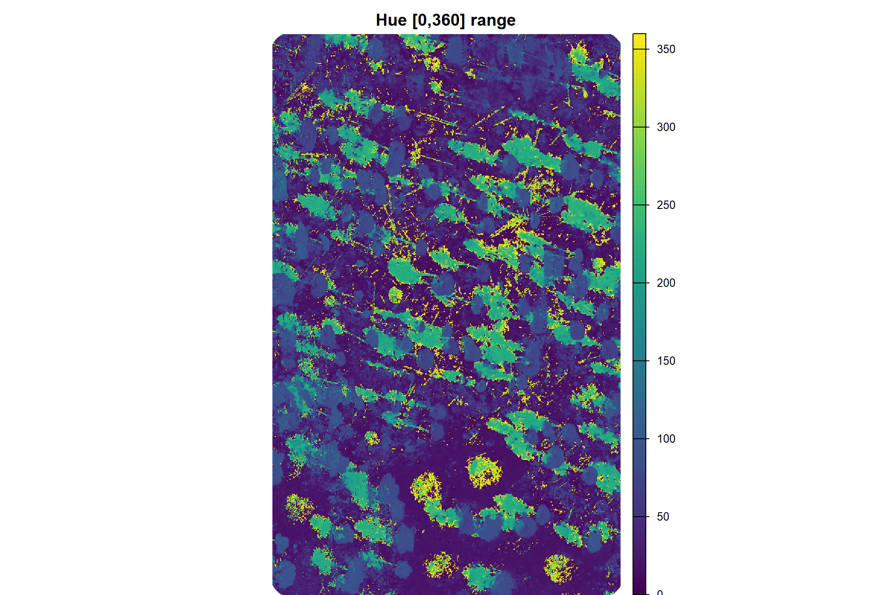
we can also look at the correlation between the different indices
# investigate correlation among covariates
all_rgb_indices_rast %>%
terra::pairs(
maxcells = min(11111, terra::ncell(all_rgb_indices_rast)*.01)
)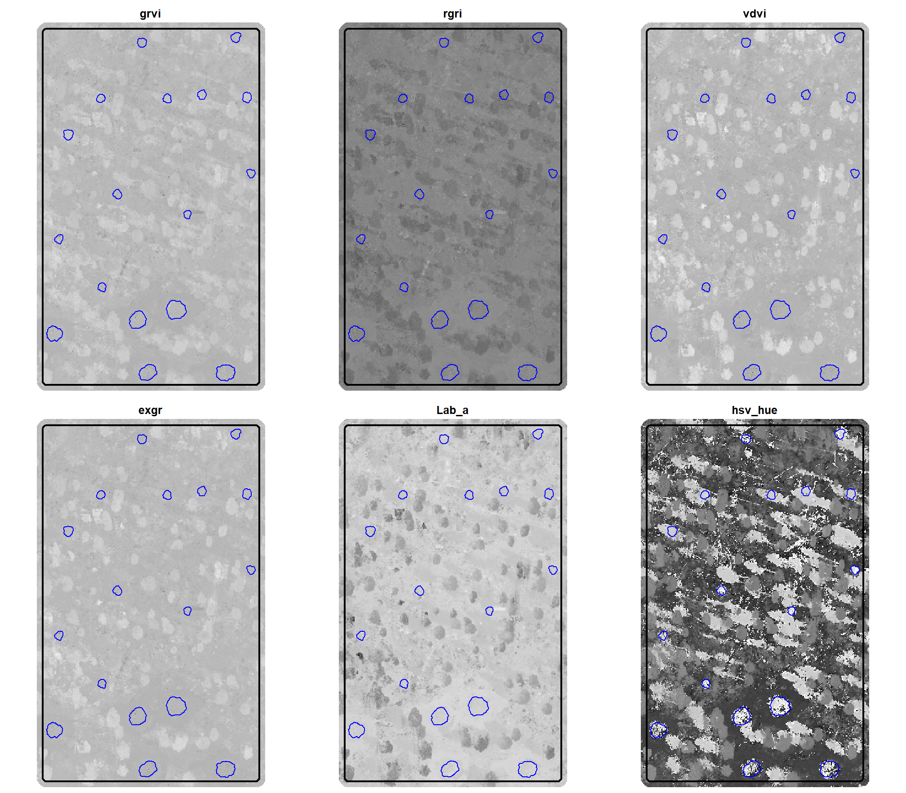
many of these spectral indices are highly (even perfectly) correlated, meaning they provide redundant information. however, the index thresholds were determined independently for the most highly correlated values so we retain them for our voting system filtering methodology since the combination of the index with the unique index provides unique identification functionality.
summary stats of these indices over our example area
## grvi rgri vdvi exgr
## Min. :-0.231626 Min. :0.656 Min. :-0.168247 Min. :-0.53902
## 1st Qu.:-0.041936 1st Qu.:0.955 1st Qu.:-0.014794 1st Qu.:-0.18671
## Median :-0.018483 Median :1.038 Median :-0.001864 Median :-0.15156
## Mean :-0.007681 Mean :1.021 Mean : 0.015520 Mean :-0.12184
## 3rd Qu.: 0.023030 3rd Qu.:1.088 3rd Qu.: 0.029838 3rd Qu.:-0.08337
## Max. : 0.207713 Max. :1.603 Max. : 0.286542 Max. : 0.45691
## NA's :5 NA's :5 NA's :5 NA's :5
## Lab_a hsv_hue
## Min. :-31.0507 Min. :0.0000
## 1st Qu.: -2.0458 1st Qu.:0.0639
## Median : 0.7873 Median :0.1293
## Mean : -0.3041 Mean :0.2407
## 3rd Qu.: 3.1358 3rd Qu.:0.2675
## Max. : 16.2004 Max. :0.9999
## NA's :4 NA's :4the terra::colorize() function produces Hue values normalized to the [0, 1] range; we can convert these normalized values to the [0, 360] range:
(all_rgb_indices_rast$hsv_hue*360) %>%
terra::plot(main="Hue [0,360] range", axes = F, mar = c(0,0,2,0))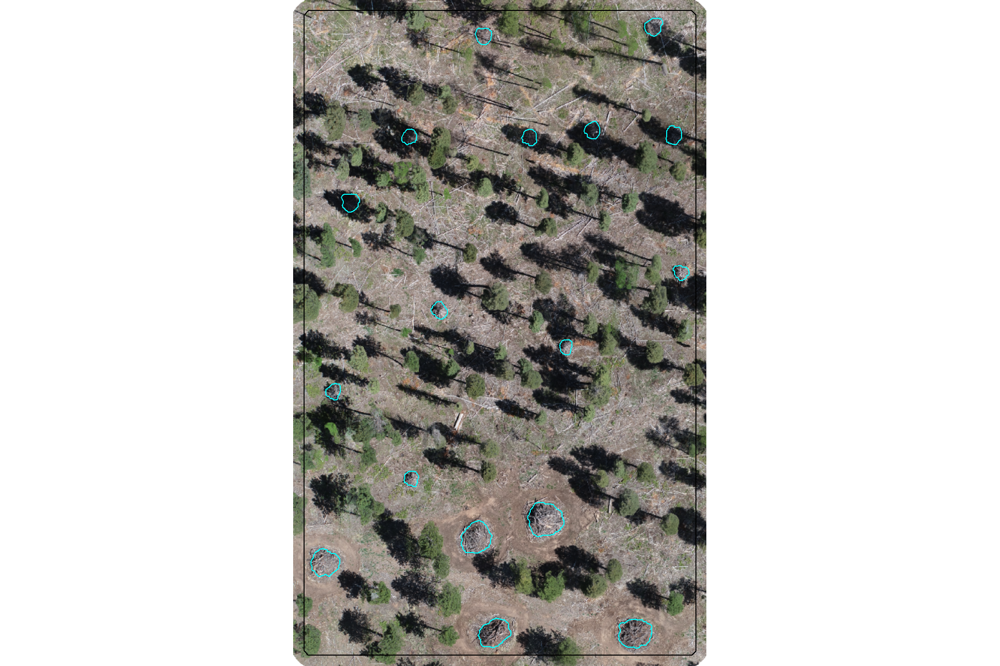
here is a plot of the different spectral indices (high values are brighter, low values are darker) on our example area we were working with in the last section with the demonstration piles in blue
all_rgb_indices_rast %>%
terra::plot(
nc = 3
, col = grDevices::gray.colors(111, start = 0, end = 1)
, mar = c(0.5,0.5,2,0.5)
, axes = FALSE
, legend = F
, fun = function(){
lines(terra::vect(aoi_boundary), col="black", lwd=2)
# add a second vector outline (cyan)
lines(
aoi_slash_piles_polys %>%
sf::st_transform(terra::crs(aoi_rgb_rast)) %>%
terra::vect()
, col = "cyan", lwd = 1.3)
}
)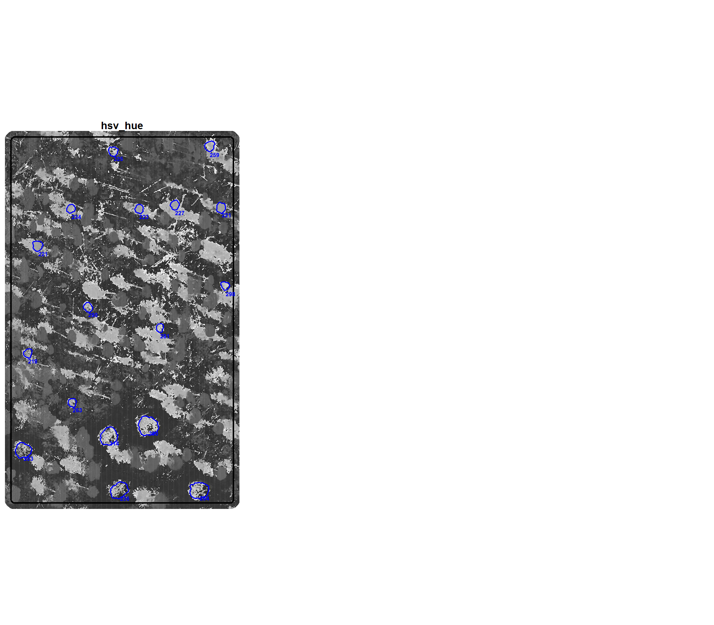
for a refresher, here is the demonstration RGB image with the image annotated piles (cyan)
terra::plotRGB(aoi_rgb_rast)
terra::plot(
aoi_boundary %>%
sf::st_transform(terra::crs(aoi_rgb_rast)) %>%
terra::vect()
, add = T, border = "black", col = NA, lwd = 1.2
)
terra::plot(
aoi_slash_piles_polys %>%
sf::st_transform(terra::crs(aoi_rgb_rast)) %>%
terra::vect()
, add = T, border = "cyan", col = NA, lwd = 1.3
)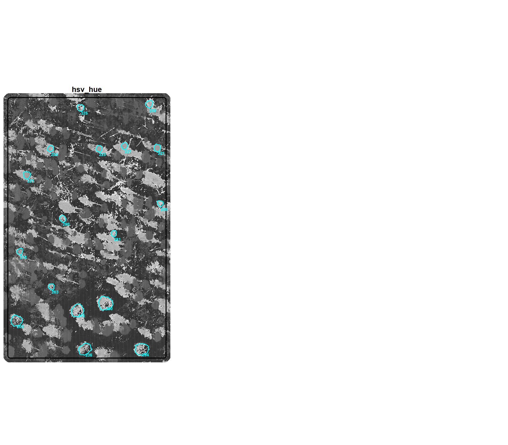
5.1.2 Spectral Index of Polygons
we now need a function to crop the raster with all spectral indices given a polygon input data and return the spectral index values as columns attached to the polygon
extract_rast_values <- function(sf_data, rast, fun_agg = mean) {
# checks
if(!inherits(rast, "SpatRaster")){
stop("Input `rast` must be a SpatRaster object.")
}
if(!inherits(sf_data, "sf")){
stop("Input `sf_data` must be an sf data frame.")
}
if(!all(sf::st_geometry_type(sf_data) %in% c("POLYGON", "MULTIPOLYGON"))) {
stop("Input `sf_data` must contain polygon geometries.")
}
if(!is.function(fun_agg)) {
stop("Argument `fun_agg` must be a function (e.g., mean, median, sum).")
}
# crs
sf_data <- sf_data %>% sf::st_transform(terra::crs(rast))
# extract values for each layer within each polygon
extracted_values <- terra::extract(
x = rast
, y = sf_data
, fun = fun_agg
, na.rm = TRUE
)
# clean data
fun_name <- deparse(substitute(fun_agg))
extracted_values <- extracted_values %>%
dplyr::select(-ID) %>%
dplyr::rename_with(
~ paste0(
"rast_"
# , fun_name ### if we want to have custom output depending on the fun_agg
, "agg"
, "_"
, .x
, recycle0 = TRUE
)
)
# Merge the extracted values back to the original sf data frame
# The row order is preserved by terra::extract, so a direct cbind is safe
# if no rows were dropped due to spatial mismatch.
# For robustness, we can explicitly join by row ID if needed, but for simple cases, cbind works.
# Assuming sf_data has a unique ID column or row order is stable:
sf_data_with_indices <- sf_data %>% dplyr::bind_cols(extracted_values)
return(sf_data_with_indices)
}5.2 Demonstration Pile Spectral Summary
let’s calculate the various spectral indices on our demonstration slash pile polygons by getting the median value within the bounds of the pile
# extract_rast_values
rgb_indices_df <- extract_rast_values(aoi_slash_piles_polys, rast = all_rgb_indices_rast, fun_agg = median) %>%
# convert hue to 0-360
dplyr::rename(rast_agg_hsv_hue_01=rast_agg_hsv_hue) %>%
dplyr::mutate(rast_agg_hsv_hue = rast_agg_hsv_hue_01*360)
rgb_indices_df %>% dplyr::glimpse()## Rows: 18
## Columns: 27
## $ pile_id <dbl> 3, 4, 5, 6, 11, 13, 17, 19, 20, 21, 22, 23, 24, 29…
## $ site <chr> "PSINF Mixed Conifer Site", "PSINF Mixed Conifer S…
## $ is_in_stand <lgl> FALSE, FALSE, FALSE, FALSE, FALSE, FALSE, FALSE, F…
## $ comment <chr> NA, NA, NA, NA, NA, NA, NA, NA, NA, NA, NA, NA, NA…
## $ comment2 <chr> NA, NA, NA, NA, NA, NA, NA, NA, NA, NA, NA, NA, NA…
## $ height_ft <dbl> NA, NA, NA, NA, NA, NA, NA, NA, NA, NA, NA, NA, NA…
## $ diameter_ft <dbl> NA, NA, NA, NA, NA, NA, NA, NA, NA, NA, NA, NA, NA…
## $ xcoord <dbl> NA, NA, NA, NA, NA, NA, NA, NA, NA, NA, NA, NA, NA…
## $ ycoord <dbl> NA, NA, NA, NA, NA, NA, NA, NA, NA, NA, NA, NA, NA…
## $ refcorner <chr> NA, NA, NA, NA, NA, NA, NA, NA, NA, NA, NA, NA, NA…
## $ row_number <int> NA, NA, NA, NA, NA, NA, NA, NA, NA, NA, NA, NA, NA…
## $ geometry <POLYGON [m]> POLYGON ((499341.7 4317759,..., POLYGON ((…
## $ image_gt_diameter_m <dbl> 6.469934, 6.867876, 6.387723, 6.589466, 5.482888, …
## $ field_height_m <dbl> NA, NA, NA, NA, NA, NA, NA, NA, NA, NA, NA, NA, NA…
## $ field_diameter_m <dbl> NA, NA, NA, NA, NA, NA, NA, NA, NA, NA, NA, NA, NA…
## $ field_radius_m <dbl> NA, NA, NA, NA, NA, NA, NA, NA, NA, NA, NA, NA, NA…
## $ image_gt_area_m2 <dbl> 25.166539, 32.028082, 22.928349, 26.261937, 20.184…
## $ field_gt_area_m2 <dbl> NA, NA, NA, NA, NA, NA, NA, NA, NA, NA, NA, NA, NA…
## $ image_gt_volume_m3 <dbl> NA, NA, NA, NA, NA, NA, NA, NA, NA, NA, NA, NA, NA…
## $ field_gt_volume_m3 <dbl> NA, NA, NA, NA, NA, NA, NA, NA, NA, NA, NA, NA, NA…
## $ rast_agg_grvi <dbl> -0.032987678, -0.028157783, -0.052449043, -0.04792…
## $ rast_agg_rgri <dbl> 1.0682260, 1.0579472, 1.1107044, 1.1006650, 1.0577…
## $ rast_agg_vdvi <dbl> -0.01968966, -0.02055517, -0.02802948, -0.02471958…
## $ rast_agg_exgr <dbl> -0.1870950, -0.1833425, -0.2159304, -0.2083939, -0…
## $ rast_agg_Lab_a <dbl> 3.3752460, 3.2705802, 4.2660341, 3.9977866, 3.0468…
## $ rast_agg_hsv_hue_01 <dbl> 0.8790719, 0.8408440, 0.6562789, 0.7464154, 0.5725…
## $ rast_agg_hsv_hue <dbl> 316.4659, 302.7038, 236.2604, 268.7095, 206.1230, …# quick summary
rgb_indices_df %>%
sf::st_drop_geometry() %>%
dplyr::select(tidyselect::starts_with("rast_agg_")) %>%
summary()## rast_agg_grvi rast_agg_rgri rast_agg_vdvi rast_agg_exgr
## Min. :-0.05245 Min. :0.8951 Min. :-0.03479 Min. :-0.2159
## 1st Qu.:-0.03178 1st Qu.:0.9909 1st Qu.:-0.02720 1st Qu.:-0.1862
## Median :-0.02010 Median :1.0410 Median :-0.02195 Median :-0.1712
## Mean :-0.01128 Mean :1.0249 Mean :-0.02268 Mean :-0.1707
## 3rd Qu.: 0.00461 3rd Qu.:1.0657 3rd Qu.:-0.01708 3rd Qu.:-0.1550
## Max. : 0.05536 Max. :1.1107 Max. :-0.01175 Max. :-0.1203
## rast_agg_Lab_a rast_agg_hsv_hue_01 rast_agg_hsv_hue
## Min. :0.3492 Min. :0.5726 Min. :206.1
## 1st Qu.:0.9728 1st Qu.:0.6233 1st Qu.:224.4
## Median :2.3915 Median :0.7249 Median :261.0
## Mean :2.3050 Mean :0.7221 Mean :259.9
## 3rd Qu.:3.3491 3rd Qu.:0.8117 3rd Qu.:292.2
## Max. :4.2660 Max. :0.9127 Max. :328.6let’s plot it
# pivot
agg_df_temp <- rgb_indices_df %>%
sf::st_drop_geometry() %>%
dplyr::select(tidyselect::starts_with("rast_agg_")) %>%
dplyr::select(-rast_agg_hsv_hue_01) %>%
tidyr::pivot_longer(cols = dplyr::everything()) %>%
dplyr::mutate(name = stringr::str_remove_all(name,"rast_agg_") %>% stringr::str_to_upper())
# plot
ggplot2::ggplot() +
ggplot2::geom_density(
data = agg_df_temp
, mapping = ggplot2::aes(x = value, fill = name)
, color = NA, alpha = 0.8
) +
ggplot2::geom_vline(
data = agg_df_temp %>% dplyr::group_by(name) %>% dplyr::mutate(value=median(value,na.rm=T))
, mapping = ggplot2::aes(xintercept = value, color = "median")
, linetype = "solid", lwd = 1
) +
ggplot2::geom_vline(
data = agg_df_temp %>% dplyr::group_by(name) %>% dplyr::mutate(value=quantile(value,na.rm=T,probs=0.025))
, mapping = ggplot2::aes(xintercept = value, color = "p2.5–p97.5")
, linetype = "solid", lwd = 1
) +
ggplot2::geom_vline(
data = agg_df_temp %>% dplyr::group_by(name) %>% dplyr::mutate(value=quantile(value,na.rm=T,probs=(1-0.025)))
, mapping = ggplot2::aes(xintercept = value, color = "p2.5–p97.5")
, linetype = "solid", lwd = 1
) +
ggplot2::scale_fill_viridis_d(option = "turbo", begin = 0.1, end = 0.9, alpha = 0.7) +
# ggplot2::scale_fill_brewer(palette = "Set2") +
ggplot2::scale_color_manual(values = c("gray22","gray","gray")) +
ggplot2::scale_x_continuous(breaks = scales::breaks_extended(8)) +
ggplot2::scale_y_continuous(NULL, breaks = NULL) +
ggplot2::facet_wrap(
facets = dplyr::vars(name)
, ncol = 3
, scales = "free"
) +
ggplot2::labs(
x = "", y = "", color = "", fill = ""
) +
ggplot2::theme_light() +
ggplot2::theme(
legend.position = "top"
, strip.text = ggplot2::element_text(size = 11, color = "black", face = "bold")
, axis.text.x = ggplot2::element_text(size = 7)
, axis.text.y = ggplot2::element_blank()
) +
ggplot2::guides(fill = "none")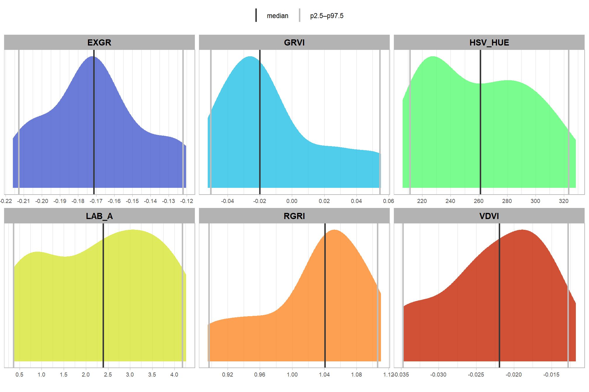
that’s interesting. compare those values with the thresholds identified in the research listed in the table above
here is a plot of the median value of the different spectral indices (high values are brighter, low values are darker) within the bounds of the pile on our example area we were working with in the last section
polys_temp <-
rgb_indices_df %>%
sf::st_transform(sf::st_crs(aoi_boundary)) %>%
dplyr::select(pile_id, tidyselect::starts_with("rast_agg_")) %>%
dplyr::select( -dplyr::any_of(c(
"hey_xxxxxxxxxx"
, "rast_agg_hsv_hue_01"
))) %>%
tidyr::pivot_longer(cols = tidyselect::starts_with("rast_agg_")) %>%
dplyr::mutate(name = stringr::str_remove(name,"rast_agg_"))
# # dplyr::filter(name=="grvi") %>%
# ggplot2::ggplot() +
# ggplot2::geom_sf(mapping=ggplot2::aes(fill=value)) +
# ggplot2::facet_wrap(facets=dplyr::vars(name)) +
# ggplot2::theme_void() +
# ggplot2::theme(legend.position = "top")
# rast clip
rast_temp <- all_rgb_indices_rast %>%
terra::crop(aoi_boundary %>% sf::st_buffer(7.3) %>% terra::vect()) %>%
terra::mask(aoi_boundary %>% sf::st_buffer(7.3) %>% terra::vect())
# plot list
plt_list_temp <-
# names(all_rgb_indices_rast) %>%
"hsv_hue" %>%
# sample(6) %>%
purrr::map(
\(x)
ggplot2::ggplot() +
ggplot2::geom_tile(
data = rast_temp[[x]] %>%
terra::as.data.frame(xy=T) %>%
dplyr::rename(f=3)
, mapping = ggplot2::aes(x = x, y = y, fill = f)
, alpha = 0.9
) +
ggplot2::geom_sf(
data = aoi_boundary
, color = "black", fill = NA, lwd = 0.8
) +
ggplot2::geom_sf(
data = polys_temp %>% dplyr::filter(name == x)
# , mapping = ggplot2::aes(fill=value)
, color = "cyan", lwd = 0.6
) +
ggrepel::geom_text_repel(
data = polys_temp %>%
dplyr::filter(name == x) %>%
sf::st_point_on_surface() %>%
dplyr::mutate(
x_coord = sf::st_coordinates(.)[, 1]
, y_coord = sf::st_coordinates(.)[, 2]
)
, mapping = ggplot2::aes(
x = x_coord
, y = y_coord
, label = dplyr::case_when(
name == "hsv_hue" ~ scales::comma(value, accuracy=1)
, T ~ scales::comma(value, accuracy=0.01)
)
, fontface = "bold"
)
, nudge_x = 0.5 # initial horizontal nudge
, nudge_y = -0.2 # initial vertical nudge
, size = 2.2, color = "cyan"
, force = 1
, box.padding = 0.3 # Increase padding to push labels further away
# , point.padding = 0.7 # Ensure distance from the original point
, min.segment.length = 0.5 # Minimum length of the connecting line segment
, segment.color = NA
) +
ggplot2::scale_fill_distiller(palette = "Greys") +
# ggplot2::scale_fill_gradientn(colors = grDevices::gray.colors(111, start = 0, end = 1)) +
ggplot2::scale_x_continuous(expand = c(0, 0)) +
ggplot2::scale_y_continuous(expand = c(0, 0)) +
ggplot2::labs(
fill = x
, subtitle = x
) +
ggplot2::theme_void() +
ggplot2::theme(
legend.position = "none"
, plot.subtitle = ggplot2::element_text(size = 11, face = "bold", hjust = 0.5)
)
)
# plt_list_temp
# patchwork
patchwork::wrap_plots(
plt_list_temp
, ncol = 3
)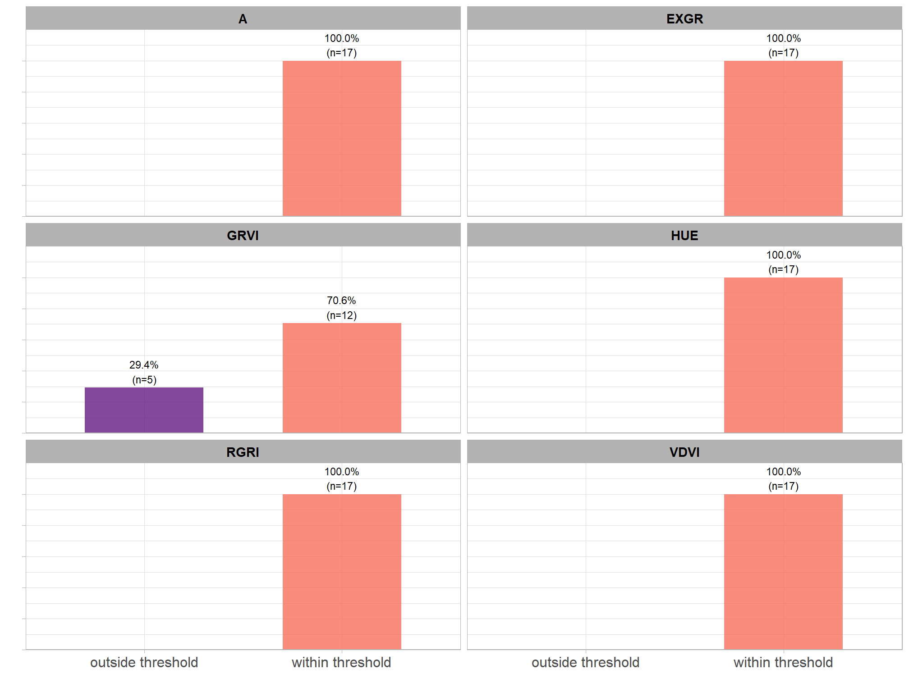
5.2.1 Voting System
let’s consider a voting system approach for filtering candidate slash piles using the multiple spectral indices. a voting system could allow for a more robust and nuanced decision than relying on a single index.
let’s make a highly specialized function using the data returned by out extract_rast_values() function
##########################################################
#### function to validate threshold vector or list pair
##########################################################
validate_thresholds_fn <- function(th_list) {
# input is a list or a numeric vector
if (!is.list(th_list) && !is.numeric(th_list)) {
stop("Validation Error: Input must be a list of pairs or a single numeric vector pair.")
}
# to a list to standardize the purrr::map iteration
items_to_check <- if(is.list(th_list)){
th_list
}else{
list(th_list)
}
# validate logic on each pair
purrr::map(items_to_check, function(x) {
# numeric type
if (!is.numeric(x)) {
stop("Validation Error: Threshold elements must be numeric.")
}
# length is exactly 2
if (length(x) != 2) {
stop(paste("Validation Error: Pair must have exactly 2 values. Found length:", length(x)))
}
# order (lower < upper)
if (x[1] >= x[2]) {
stop(paste0("Validation Error: Lower limit must be smaller than upper limit. Found: [", x[1], ", ", x[2], "]"))
}
})
# 4. If all checks passed (no stop triggered), return the original input
return(th_list)
}
##########################################################
# function to filter a data frame by a list pair and column
##########################################################
filter_by_thresholds_fn <- function(df, target_col, th_list) {
# col exists?
if (!(target_col %in% names(df))) {
stop(paste0("Column '", target_col, "' not found in the data frame"))
}
# validate the thresholds using previous function
valid_th <- validate_thresholds_fn(th_list)
# thresholds to a list if a single vector was provided
th_pairs <-
if(is.list(valid_th)){
valid_th
}else{
list(valid_th)
}
# use purrr::map to create a list of logical vectors (one for each pair)
# then reduce them with '|' so any row hitting any range is kept
df %>%
dplyr::mutate(
is_inrange = purrr::map(th_pairs, function(x) {
dplyr::between(.data[[target_col]], x[1], x[2])
}) %>%
purrr::reduce(`|`) %>%
as.integer()
)
# dplyr::filter(
# purrr::map(
# th_pairs
# , function(x) {
# dplyr::between(.data[[target_col]], x[1], x[2])
# }
# ) %>%
# purrr::reduce(`|`)
# )
}
# filter_by_thresholds_fn(
# rgb_indices_df
# , target_col = "rast_agg_hsv_hue"
# # , th_list = c(275,Inf)
# , th_list = list(c(0,210), c(275,Inf))
# # , th_list = c(275,207)
# ) %>%
# ggplot2::ggplot(aes(x=rast_agg_hsv_hue,y=0,color=as.factor(is_inrange))) + ggplot2::geom_jitter()
#
# filter_by_thresholds_fn(
# rgb_indices_df
# , target_col = "rast_agg_hsv_hue"
# # , th_list = c(275,Inf)
# , th_list = list(c(0,210), c(275,Inf))
# # , th_list = c(275,207)
# ) %>%
# dplyr::glimpse()
# voting system
rgb_indices_threshold_voting <- function(
rgb_indices_df
# define ranges to *keep* piles
, th_grvi = c(-Inf,0)
, th_rgri = c((0.7+0.001),Inf) # increase each by 0.001 since we'll be checking lower<=x<=upper
, th_vdvi = c(-Inf,(0.03+0.001)) # increase each by 0.001 since we'll be checking lower<=x<=upper
, th_exgr = c(-Inf,0)
, th_a = c(-5+0.001,Inf)
, th_hue = list(c(0,50-0.001), c(150+0.001,Inf))
){
# checks
if(!inherits(rgb_indices_df, "data.frame")){
stop("Input `rgb_indices_df` must be an data.frame.")
}
# names
agg_cols <- c("rast_agg_grvi","rast_agg_exgr","rast_agg_rgri","rast_agg_vdvi","rast_agg_Lab_a","rast_agg_hsv_hue") # "rast_agg_rgbvi",
nm_diff <- base::setdiff(
agg_cols
, names(rgb_indices_df)
)
if(length(nm_diff)>0){
stop(paste0("required variables missing:\n", "... ", paste(nm_diff, collapse = ", ") ))
}
# thresholds
safe_validate_thresholds_fn <- purrr::safely(validate_thresholds_fn)
# th_grvi
chk_grvi <- safe_validate_thresholds_fn(th_grvi)
if(is.null(chk_grvi$result)){
stop(paste0("Input `th_grvi`: ", chk_grvi$error))
}
# th_rgri
chk_rgri <- safe_validate_thresholds_fn(th_rgri)
if(is.null(chk_rgri$result)){
stop(paste0("Input `th_rgri`: ", chk_rgri$error))
}
# th_vdvi
chk_vdvi <- safe_validate_thresholds_fn(th_vdvi)
if(is.null(chk_vdvi$result)){
stop(paste0("Input `th_vdvi`: ", chk_vdvi$error))
}
# th_exgr
chk_exgr <- safe_validate_thresholds_fn(th_exgr)
if(is.null(chk_exgr$result)){
stop(paste0("Input `th_exgr`: ", chk_exgr$error))
}
# th_a
chk_a <- safe_validate_thresholds_fn(th_a)
if(is.null(chk_a$result)){
stop(paste0("Input `th_a`: ", chk_a$error))
}
# th_hue
chk_hue <- safe_validate_thresholds_fn(th_hue)
if(is.null(chk_hue$result)){
stop(paste0("Input `th_hue`: ", chk_hue$error))
}
# get rid of columns we'll create
rgb_indices_df <- rgb_indices_df %>%
# throw in hey_xxxxxxxxxx to test it works if we include non-existant columns
dplyr::select( -dplyr::any_of(c(
"hey_xxxxxxxxxx"
, "is_inrange"
, "inrange_th_grvi"
, "inrange_th_rgri"
, "inrange_th_vdvi"
, "inrange_th_exgr"
, "inrange_th_Lab_a"
, "inrange_th_hsv_hue"
)))
# check threshold
ret_df <- rgb_indices_df %>%
filter_by_thresholds_fn(target_col = "rast_agg_grvi", th_list = th_grvi) %>%
dplyr::rename(inrange_th_grvi=is_inrange) %>%
filter_by_thresholds_fn(target_col = "rast_agg_rgri", th_list = th_rgri) %>%
dplyr::rename(inrange_th_rgri=is_inrange) %>%
filter_by_thresholds_fn(target_col = "rast_agg_vdvi", th_list = th_vdvi) %>%
dplyr::rename(inrange_th_vdvi=is_inrange) %>%
filter_by_thresholds_fn(target_col = "rast_agg_exgr", th_list = th_exgr) %>%
dplyr::rename(inrange_th_exgr=is_inrange) %>%
filter_by_thresholds_fn(target_col = "rast_agg_Lab_a", th_list = th_a) %>%
dplyr::rename(inrange_th_Lab_a=is_inrange) %>%
filter_by_thresholds_fn(target_col = "rast_agg_hsv_hue", th_list = th_hue) %>%
dplyr::rename(inrange_th_hsv_hue=is_inrange) %>%
dplyr::rowwise() %>%
dplyr::mutate(
inrange_th_votes = sum(
dplyr::c_across(tidyselect::starts_with("inrange_th_"))
, na.rm = T
) %>%
dplyr::coalesce(0)
) %>%
ungroup()
#return
return(ret_df)
}let’s look at the columns we get from our rgb_indices_threshold_voting() function
rgb_indices_df <- rgb_indices_threshold_voting(rgb_indices_df=rgb_indices_df)
# huh?
rgb_indices_df %>%
sf::st_drop_geometry() %>%
dplyr::select(tidyselect::starts_with("inrange_th_")) %>%
summary()## inrange_th_grvi inrange_th_rgri inrange_th_vdvi inrange_th_exgr
## Min. :0.0000 Min. :1 Min. :1 Min. :1
## 1st Qu.:0.2500 1st Qu.:1 1st Qu.:1 1st Qu.:1
## Median :1.0000 Median :1 Median :1 Median :1
## Mean :0.7222 Mean :1 Mean :1 Mean :1
## 3rd Qu.:1.0000 3rd Qu.:1 3rd Qu.:1 3rd Qu.:1
## Max. :1.0000 Max. :1 Max. :1 Max. :1
## inrange_th_Lab_a inrange_th_hsv_hue inrange_th_votes
## Min. :1 Min. :1 Min. :5.000
## 1st Qu.:1 1st Qu.:1 1st Qu.:5.250
## Median :1 Median :1 Median :6.000
## Mean :1 Mean :1 Mean :5.722
## 3rd Qu.:1 3rd Qu.:1 3rd Qu.:6.000
## Max. :1 Max. :1 Max. :6.000notice the “Mean” value in the summary above is the proportion of demonstration piles that successfully met the spectral index threshold criteria (i.e. piles to be “kept”). it looks like the GRVI threshold was most unaligned with these demonstration piles, something we anticipated by looking at the distributions above compared with the threshold value recommended in the literature for detecting green vegetation.
let’s look at the proportional distribution of demonstration piles meeting the threshold by individual spectral index
rgb_indices_df %>%
sf::st_drop_geometry() %>%
dplyr::select(tidyselect::starts_with("inrange_th_")) %>%
tidyr::pivot_longer(cols = dplyr::everything()) %>%
dplyr::mutate(name = stringr::str_remove_all(name,"inrange_th_") %>% stringr::str_to_upper()) %>%
dplyr::filter(name!="VOTES") %>%
dplyr::count(name,value) %>%
dplyr::group_by(name) %>%
dplyr::mutate(
pct = n/sum(n)
, value = factor(value, levels = 0:1, labels = c("outside threshold","within threshold"), ordered = T)
, lab = paste0(scales::percent(pct,accuracy=0.1), "\n(n=", scales::comma(n,accuracy=1), ")")
) %>%
ggplot2::ggplot(
mapping = ggplot2::aes(x = value, y = pct, label = lab, fill = value)
) +
ggplot2::geom_col(
width = 0.6
, color = NA, alpha = 0.8
) +
ggplot2::geom_text(color = "black", size = 3, vjust = -0.2) +
ggplot2::scale_fill_viridis_d(option = "magma", begin = 0.3, end = 0.7) +
ggplot2::scale_y_continuous(
breaks = seq(0,1,by=0.2)
, labels = scales::percent
, expand = ggplot2::expansion(mult = c(0,0.2))
) +
ggplot2::facet_wrap(
facets = dplyr::vars(name)
, ncol = 2
) +
ggplot2::labs(
x = "", y = "", fill = ""
) +
ggplot2::theme_light() +
ggplot2::theme(
legend.position = "none"
, strip.text = ggplot2::element_text(size = 11, color = "black", face = "bold")
, axis.text.x = ggplot2::element_text(size = 12)
, axis.text.y = ggplot2::element_blank()
)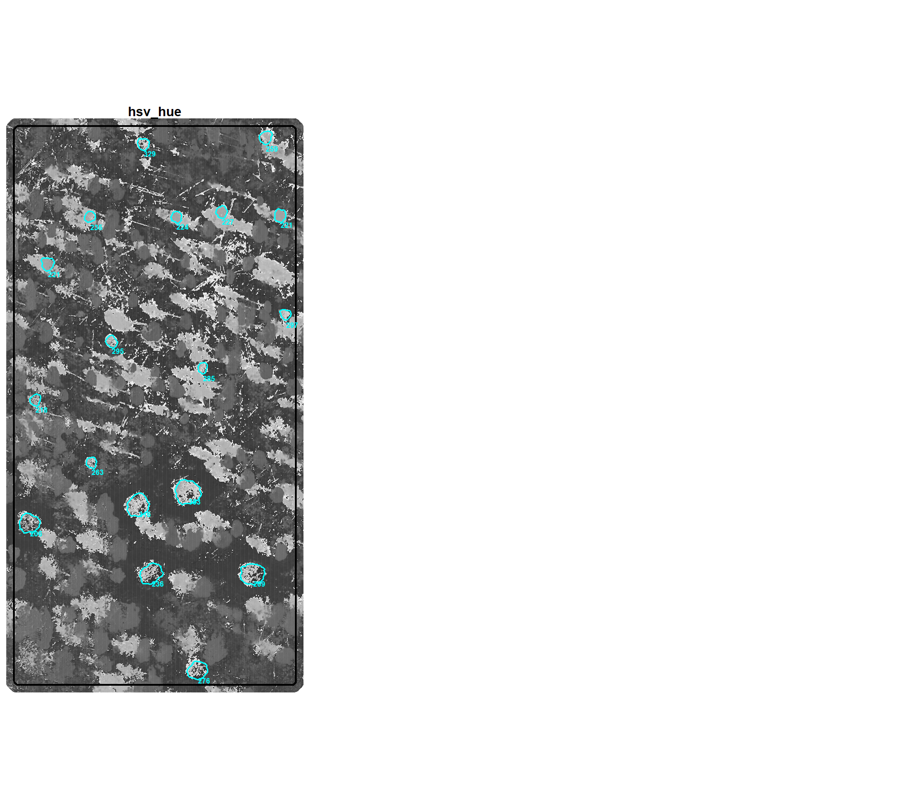
and let’s look at the distribution of demonstration piles based on the number of individual spectral index thresholds met. we’ll use this count as our voting system.
dplyr::tibble(value=0:6) %>%
dplyr::left_join(
rgb_indices_df %>%
sf::st_drop_geometry() %>%
dplyr::select(tidyselect::starts_with("inrange_th_votes")) %>%
tidyr::pivot_longer(cols = dplyr::everything()) %>%
dplyr::mutate(name = stringr::str_remove_all(name,"inrange_th_") %>% stringr::str_to_upper()) %>%
dplyr::count(name,value)
, by = dplyr::join_by(value)
) %>%
dplyr::mutate(
n = dplyr::coalesce(n,0)
, pct = n/sum(n)
, lab = paste0(scales::percent(pct,accuracy=0.1), "\n(n=", scales::comma(n,accuracy=1), ")")
, value = factor(value)
, cum_pct = cumsum(pct)
, cum_pct_lab = scales::percent(cum_pct,accuracy=0.1)
) %>%
ggplot2::ggplot(
mapping = ggplot2::aes(x = value, y = pct, label = lab, fill = value)
) +
ggplot2::geom_col(
width = 0.6
, color = NA, alpha = 0.8
) +
ggplot2::geom_text(color = "black", size = 4, vjust = -0.2) +
ggplot2::scale_fill_viridis_d(option = "mako", direction=-1) +
ggplot2::scale_y_continuous(
labels = scales::percent
, expand = ggplot2::expansion(mult = c(0,0.15))
) +
ggplot2::labs(
y = "", x = "spectral index threshold votes", fill = ""
, subtitle = "distribution of demonstration piles meeting spectral index thresholds"
) +
ggplot2::theme_light() +
ggplot2::theme(
legend.position = "none"
, axis.text.x = ggplot2::element_text(size = 12)
, axis.text.y = ggplot2::element_blank()
)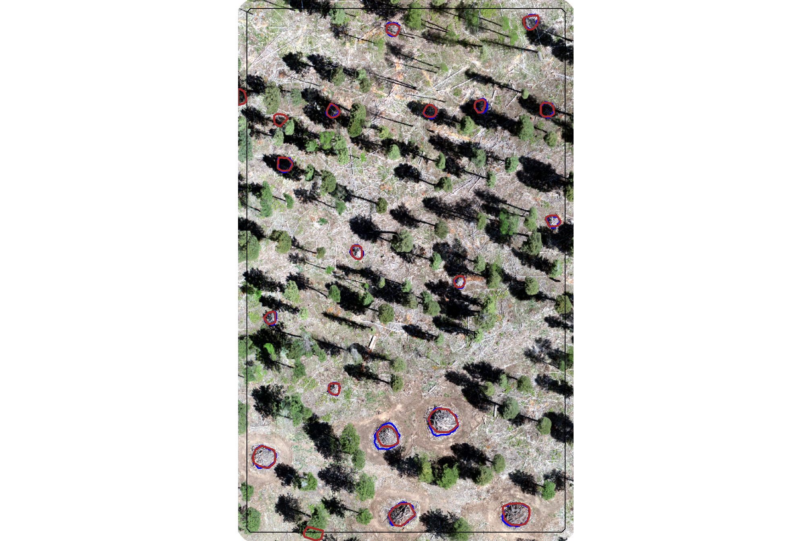
we can use this spectral index voting system to filter candidate slash piles with a user-defined parameter which defines the sensitivity of filtering based on the spectral information. For example, a value of “6” would heavily weight the spectral information in determining which piles to keep while a value of “1” would put less weight on the spectral data.
5.3 Candidate Polygon Spectral Filtering Function
let’s put all of this together to define a function that takes as input: 1) a spatial data frame of candidate polygons; 2) a raster with RGB spectral data; 3) user-defined spectral weighting (voting system)
polygon_spectral_filtering <- function(
sf_data
, rgb_rast
# define the band index
, red_band_idx
, green_band_idx
, blue_band_idx
# spectral weighting
, spectral_weight = 3
# return unfiltered or filtered
, filter_return = T
) {
if(!inherits(filter_return,"logical")){
stop("Input `filter_return` should be logical: T to filter return based on the `spectral_weight` or F to return the full `sf_data`")
}
# ### could make these parameters
# th_grvi <- c(-Inf,0)
# th_rgri <- c((0.7+0.001),Inf) # increase each by 0.001 since we'll be checking lower<=x<=upper
# th_vdvi <- c(-Inf,(0.03+0.001)) # increase each by 0.001 since we'll be checking lower<=x<=upper
# th_exgr <- c(-Inf,0)
# th_a <- c(-5+0.001,Inf)
# th_hue <- list(c(0,50-0.001), c(150+0.001,Inf))
# checks
if(!inherits(rgb_rast, "SpatRaster")){
stop("Input `rast` must be a SpatRaster object.")
}
if(!inherits(sf_data, "sf")){
stop("Input `sf_data` must be an sf data frame.")
}
if(!all(sf::st_geometry_type(sf_data) %in% c("POLYGON", "MULTIPOLYGON"))) {
stop("Input `sf_data` must contain polygon geometries.")
}
spectral_weight <- as.numeric(spectral_weight)
if(
filter_return &&
(
is.na(spectral_weight) ||
is.null(spectral_weight) ||
is.nan(spectral_weight) ||
!(spectral_weight %in% c(0:6))
)
){
stop("Input `spectral_weight` must be a number between 0 (no filtering based on spectral) and 6 (highest weighting of spectral data)")
}
# if you don't want to do it, then why do it?
if(
filter_return &&
dplyr::coalesce(spectral_weight,0)==0
){
return(sf_data)
}
##################################################
# calculate_all_rgb_indices
##################################################
all_rgb_indices_rast <- calculate_all_rgb_indices(
raster_obj = rgb_rast
, red_band_idx = red_band_idx
, green_band_idx = green_band_idx
, blue_band_idx = blue_band_idx
)
##################################################
# limit to the indices we have thresholds for
##################################################
some_rgb_indices_rast <-
all_rgb_indices_rast %>%
terra::subset(
c(
"grvi"
, "rgri"
, "vdvi"
, "exgr"
, "Lab_a"
, "hsv_hue"
)
)
# !!!!!!!!!!!!! convert hsv_hue to 0-360 range !!!!!!!!!!!!!
some_rgb_indices_rast$hsv_hue <- some_rgb_indices_rast$hsv_hue*360
##################################################
# extract_rast_values
##################################################
rgb_indices_df <- extract_rast_values(
sf_data = sf_data %>% dplyr::ungroup()
, rast = some_rgb_indices_rast
, fun_agg = median
)
##################################################
# rgb_indices_threshold_voting
##################################################
rgb_indices_df <- rgb_indices_threshold_voting(
rgb_indices_df=rgb_indices_df
# , th_grvi = th_grvi
# , th_rgri = th_rgri
# , th_vdvi = th_vdvi
# , th_exgr = th_exgr
# , th_a = th_a
# , th_hue = th_hue
)
##################################################
# filtering
##################################################
if(filter_return){
rgb_indices_df <- rgb_indices_df %>% dplyr::filter(inrange_th_votes>=spectral_weight)
}
# return
return(list(
segs_sf = rgb_indices_df
, rgb_indices_rast = all_rgb_indices_rast
))
}
# polygon_spectral_filtering(
# sf_data = slash_piles_polys
# , rgb_rast = ortho_rast
# , red_band_idx = 1
# , green_band_idx = 2
# , blue_band_idx = 3
# , spectral_weight = 4
# ) %>%
# nrow()
# # dplyr::glimpse()
# nrow(slash_piles_polys)5.4 Data Fusion Method Demonstration
we previously worked through an example where we identified candidate slash piles based on their structural form using our raster-based segmentation approach. we’re going to use that demonstration area, apply the slash_pile_detect() function to detect candidate slash piles from the CHM data based on expected size and geometric properties, and then integrate the spectral filtering method we defined above.
for this demonstration, we’ll use the DBSCAN segmentation method with the same size and geometric thresholds that we used in the previous section so that we can demonstrate how the spectral filtering helps remove false positives that are likely vegetation
# structurally predicted from chm
slash_pile_detect_dbscan_ans_temp <- slash_pile_detect(
chm_rast = aoi_chm_rast
, seg_method = "dbscan"
, min_ht_m = 0.5
, max_ht_m = 6
, min_area_m2 = 1.5
, max_area_m2 = 50
, min_convexity_ratio = 0.5
, min_circularity_ratio = 0.45
)let’s overlay the structural candidate segments (magenta) and the actual piles (cyan) on the raw, un-filtered CHM
aoi_chm_rast %>%
# slash_pile_detect_dbscan_ans_temp$slice_chm_rast %>%
terra::plot(axes = F, col = viridis::plasma(100), mar = c(0,0,0,0))
terra::plot(
aoi_boundary %>%
sf::st_transform(terra::crs(aoi_chm_rast)) %>%
terra::vect()
, add = T, border = "black", col = NA, lwd = 1.2
)
terra::plot(
aoi_slash_piles_polys %>%
sf::st_transform(terra::crs(aoi_chm_rast)) %>%
terra::vect()
, add = T, border = "cyan", col = NA, lwd = 2
)
terra::plot(
slash_pile_detect_dbscan_ans_temp$segs_sf %>% terra::vect()
, add = T, border = "magenta", col = NA, lwd = 2.5
)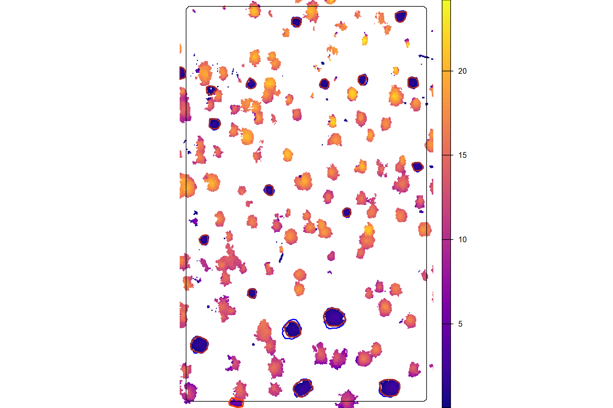
now overlay the structural candidate segments (magenta) and the actual piles (cyan) on the RGB
aoi_rgb_rast %>%
terra::plotRGB(axes = F, mar = c(0,0,0,0), stretch = "lin")
terra::plot(
aoi_boundary %>%
sf::st_transform(terra::crs(aoi_rgb_rast)) %>%
terra::vect()
, add = T, border = "black", col = NA, lwd = 1.2
)
terra::plot(
aoi_slash_piles_polys %>%
sf::st_transform(terra::crs(aoi_rgb_rast)) %>%
terra::vect()
, add = T, border = "cyan", col = NA, lwd = 2
)
terra::plot(
slash_pile_detect_dbscan_ans_temp$segs_sf %>%
sf::st_transform(terra::crs(aoi_rgb_rast)) %>%
terra::vect()
, add = T, border = "magenta", col = NA, lwd = 2.5
)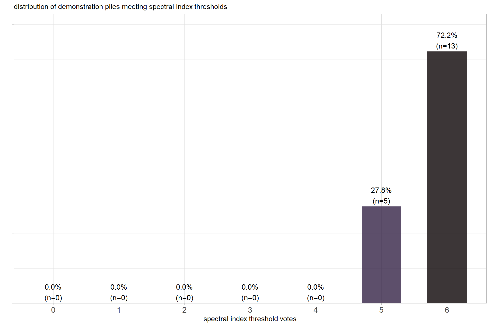
notice there are lower portions of trees or small trees that are proposed as candidate segments given our less strict size and geometric filters
Remember, our data fusion method uses the spectral data strictly as a final filter or quality check on the structurally-detected candidate piles, meaning it neither adds new piles nor alters the shape or location of the candidates. As a result, if the structural detection step missed a pile (false negative or omission), the spectral data won’t go back and fix it. The only changes we can expect by including spectral data in our data fusion approach is a trade-off: we can either improve our precision by successfully removing detections that aren’t actually piles (commissions or false positives), or we run the risk of mistakenly filtering out real piles (true positives) if their spectral signature happens to look unusual, which would unfortunately lower our recall.
let’s apply our spectral filtering method to the set of structurally-detected piles but we’ll leave the return unfiltered (filter_return=F) so that we can see which candidate piles would have been filtered and why depending on the spectral_weight setting which defines how many of the six spectral thresholds must be met for a candidate pile to be retained given filter_return=T
# names(aoi_rgb_rast)
slash_pile_detect_spec_filt_temp <- polygon_spectral_filtering(
sf_data = slash_pile_detect_dbscan_ans_temp$segs_sf
, rgb_rast = aoi_rgb_rast
# define the band index
, red_band_idx = 1
, green_band_idx = 2
, blue_band_idx = 3
# leave return unfiltered
, filter_return = F
)what did we get?
## List of 2
## $ segs_sf : sf [25 × 22] (S3: sf/tbl_df/tbl/data.frame)
## ..$ pred_id : num [1:25] 3 4 22 35 38 39 40 43 56 67 ...
## ..$ convexity_ratio : num [1:25] 0.931 0.929 0.938 0.9 0.928 ...
## ..$ circularity_ratio : num [1:25] 0.671 0.73 0.477 0.641 0.733 ...
## ..$ area_m2 : num [1:25] 8.33 6.18 5.27 5.51 8.06 ...
## ..$ volume_m3 : num [1:25] 6.66 3.13 5.52 3.25 4.45 ...
## ..$ max_height_m : num [1:25] 1.73 1.15 2.58 1.5 1.53 ...
## ..$ volume_per_area : num [1:25] 0.799 0.506 1.047 0.589 0.553 ...
## ..$ geometry :sfc_POLYGON of length 25; first list element: List of 1
## .. ..- attr(*, "class")= chr [1:3] "XY" "POLYGON" "sfg"
## ..$ diameter_m : num [1:25] 3.83 3.14 3.63 3.14 3.54 ...
## ..$ rast_agg_grvi : num [1:25] -0.0116 -0.0413 0.0245 0.0271 0.0548 ...
## ..$ rast_agg_rgri : num [1:25] 1.023 1.086 0.952 0.947 0.896 ...
## ..$ rast_agg_vdvi : num [1:25] -0.019 -0.0235 0.0115 -0.0343 -0.0289 ...
## ..$ rast_agg_exgr : num [1:25] -0.166 -0.2007 -0.0939 -0.1466 -0.1192 ...
## ..$ rast_agg_Lab_a : num [1:25] 1.844 3.729 -0.727 0.79 0.345 ...
## ..$ rast_agg_hsv_hue : num [1:25] 257 328 141 227 221 ...
## ..$ inrange_th_grvi : int [1:25] 1 1 0 0 0 0 0 1 0 1 ...
## ..$ inrange_th_rgri : int [1:25] 1 1 1 1 1 1 1 1 1 1 ...
## ..$ inrange_th_vdvi : int [1:25] 1 1 1 1 1 1 1 1 1 1 ...
## ..$ inrange_th_exgr : int [1:25] 1 1 1 1 1 1 1 1 1 1 ...
## ..$ inrange_th_Lab_a : int [1:25] 1 1 1 1 1 1 1 1 1 1 ...
## ..$ inrange_th_hsv_hue: int [1:25] 1 1 0 1 1 1 1 1 1 1 ...
## ..$ inrange_th_votes : num [1:25] 6 6 4 5 5 5 5 6 5 6 ...
## ..- attr(*, "sf_column")= chr "geometry"
## ..- attr(*, "agr")= Factor w/ 3 levels "constant","aggregate",..: NA NA NA NA NA NA NA NA NA NA ...
## .. ..- attr(*, "names")= chr [1:21] "pred_id" "convexity_ratio" "circularity_ratio" "area_m2" ...
## $ rgb_indices_rast:S4 class 'SpatRaster' [package "terra"]how many piles would be removed if we set a spectral_weight of “5” which requires five of the six spectral thresholds to be met for a candidate pile to be retained
# how many piles were removed?
nrow(slash_pile_detect_spec_filt_temp$segs_sf)-
nrow(slash_pile_detect_spec_filt_temp$segs_sf %>% dplyr::filter(inrange_th_votes>=5))## [1] 5# what proportion were removed?
scales::percent(
(
nrow(slash_pile_detect_spec_filt_temp$segs_sf)-
nrow(slash_pile_detect_spec_filt_temp$segs_sf %>% dplyr::filter(inrange_th_votes>=5))
)/nrow(slash_pile_detect_spec_filt_temp$segs_sf)
, accuracy=0.1
)## [1] "20.0%"let’s highlight the spectrally filtered segments (orange) with the candidate segments that were retained by the spectral filtering (magenta) and the actual piles (cyan) on the raw, un-filtered CHM
aoi_chm_rast %>%
# slash_pile_detect_dbscan_ans_temp$slice_chm_rast %>%
terra::plot(axes = F, col = viridis::plasma(100), mar = c(0,0,0,0))
terra::plot(
aoi_boundary %>%
sf::st_transform(terra::crs(aoi_chm_rast)) %>%
terra::vect()
, add = T, border = "black", col = NA, lwd = 1.2
)
terra::plot(
aoi_slash_piles_polys %>%
sf::st_transform(terra::crs(aoi_chm_rast)) %>%
terra::vect()
, add = T, border = "cyan", col = NA, lwd = 2
)
terra::plot(
slash_pile_detect_spec_filt_temp$segs_sf %>%
dplyr::filter(inrange_th_votes>=5) %>%
terra::vect()
, add = T, border = "magenta", col = NA, lwd = 2.5
)
terra::plot(
slash_pile_detect_spec_filt_temp$segs_sf %>%
dplyr::filter(inrange_th_votes<5) %>%
terra::vect()
, add = T, border = "orangered", col = NA, lwd = 2.5
)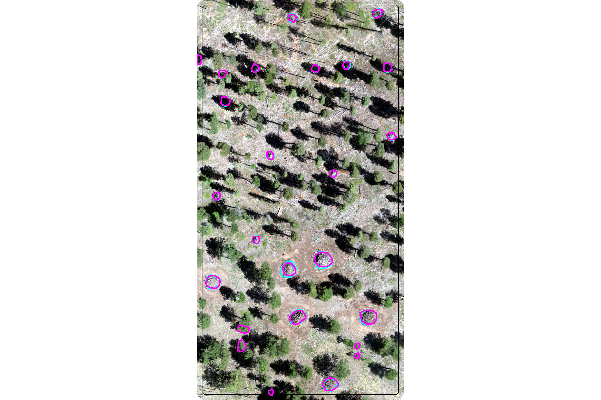
now let’s highlight the spectrally filtered segments (orange) with the candidate segments that were retained by the spectral filtering (magenta) and the actual piles (cyan) on the RGB
aoi_rgb_rast %>%
terra::plotRGB(axes = F, mar = c(0,0,0,0), stretch = "lin")
terra::plot(
aoi_boundary %>%
sf::st_transform(terra::crs(aoi_rgb_rast)) %>%
terra::vect()
, add = T, border = "black", col = NA, lwd = 1.2
)
terra::plot(
aoi_slash_piles_polys %>%
sf::st_transform(terra::crs(aoi_rgb_rast)) %>%
terra::vect()
, add = T, border = "cyan", col = NA, lwd = 2
)
terra::plot(
slash_pile_detect_spec_filt_temp$segs_sf %>%
dplyr::filter(inrange_th_votes>=5) %>%
sf::st_transform(terra::crs(aoi_rgb_rast)) %>%
terra::vect()
, add = T, border = "magenta", col = NA, lwd = 2.5
)
terra::plot(
slash_pile_detect_spec_filt_temp$segs_sf %>%
dplyr::filter(inrange_th_votes<5) %>%
sf::st_transform(terra::crs(aoi_rgb_rast)) %>%
terra::vect()
, add = T, border = "orangered", col = NA, lwd = 2.5
)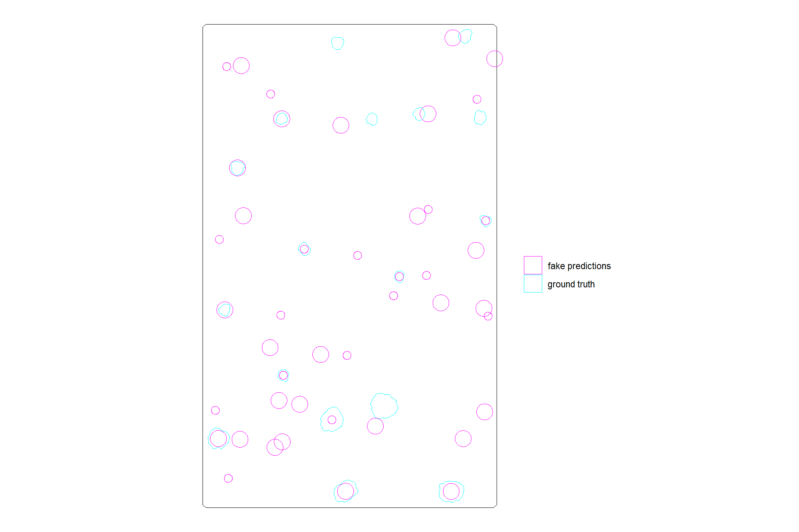
in this demonsration area, the spectral filtering of our data fusion approach successfully filtered the structurally detected candidate piles that were clearly lower parts of trees (clearly green in the RGB). however, the spectral filtering failed to remove some false positive predictions that were shadowed in the RGB imagery. a positive result, though, was that the spectral filtering stage did not remove any true positive predictions.
let’s see the spectral index values of the candidates which were identified for removal
slash_pile_detect_spec_filt_temp$segs_sf %>%
sf::st_drop_geometry() %>%
dplyr::ungroup() %>%
dplyr::mutate(rand = runif(n=nrow(slash_pile_detect_spec_filt_temp$segs_sf))) %>%
dplyr::arrange(rand) %>%
dplyr::mutate(
is_removed = inrange_th_votes<5
, sorter = dplyr::row_number()
) %>%
dplyr::select(
pred_id, is_removed, sorter
, tidyselect::starts_with("rast_agg_")
, tidyselect::starts_with("inrange_th_")
) %>%
dplyr::select(-tidyselect::ends_with("_votes")) %>%
tidyr::pivot_longer(
cols = c(
tidyselect::starts_with("rast_agg_")
, tidyselect::starts_with("inrange_th_")
)
) %>%
dplyr::mutate(
i = name %>%
stringr::str_remove("^rast_agg_") %>%
stringr::str_remove("^inrange_th_")
, v = stringr::str_extract(name, "^(rast_agg_|inrange_th_)")
) %>%
dplyr::select(-name) %>%
tidyr::pivot_wider(names_from = v, values_from = value) %>%
dplyr::mutate(inrange_th_ = as.logical(inrange_th_)) %>%
ggplot2::ggplot(
mapping = ggplot2::aes(
x = rast_agg_, y = sorter
, shape = is_removed
, color = inrange_th_
)
) +
ggplot2::geom_point(size = 4) +
ggplot2::facet_wrap(facets = dplyr::vars(i), scales = "free_x") +
ggplot2::scale_color_viridis_d(option = "turbo", begin = 0.2, direction = -1) +
ggplot2::scale_shape_manual(values = c(19,17)) +
ggplot2::scale_y_continuous(NULL,breaks=1:nrow(slash_pile_detect_spec_filt_temp$segs_sf)) +
ggplot2::labs(
x = ""
, shape = "ultimately\nspectrally filtered?"
, color = "meets\nindex threshold?"
) +
ggplot2::theme_light() +
ggplot2::theme(
legend.position = "top"
, axis.ticks.y = ggplot2::element_blank()
, axis.text.y = ggplot2::element_blank()
, panel.grid.major.y = ggplot2::element_line(color = "gray97", linewidth = 0.05)
, panel.grid.minor.y = ggplot2::element_line(color = "gray97", linewidth = 0.05)
, strip.text = ggplot2::element_text(size = 11, color = "black", face = "bold")
) +
ggplot2::guides(
color = ggplot2::guide_legend(override.aes = list(size = 5)),
shape = ggplot2::guide_legend(override.aes = list(size = 5))
)
the strength of our ensemble spectral index filtering approach is clear with this demonstration data as only one index perfectly aligned with the overall vote for removing candidate piles